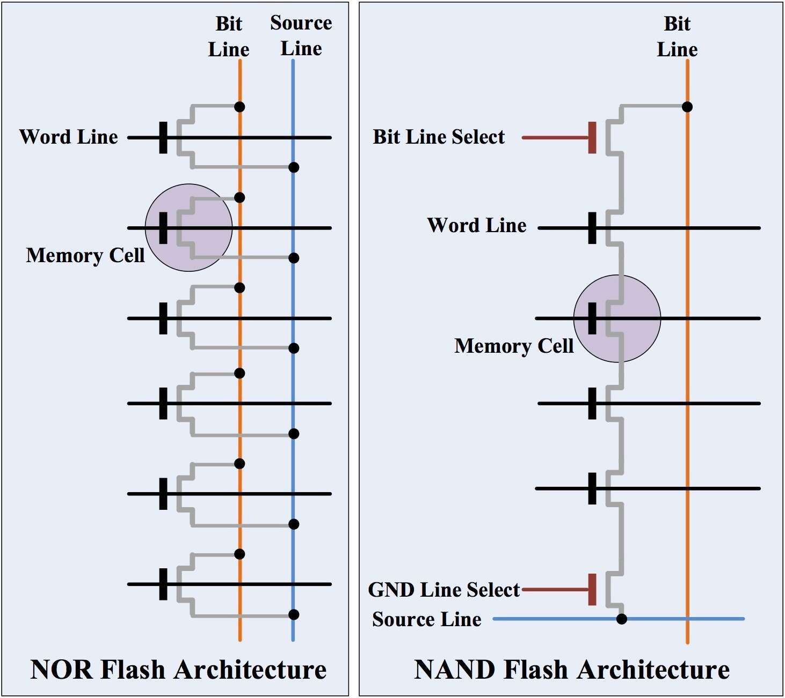
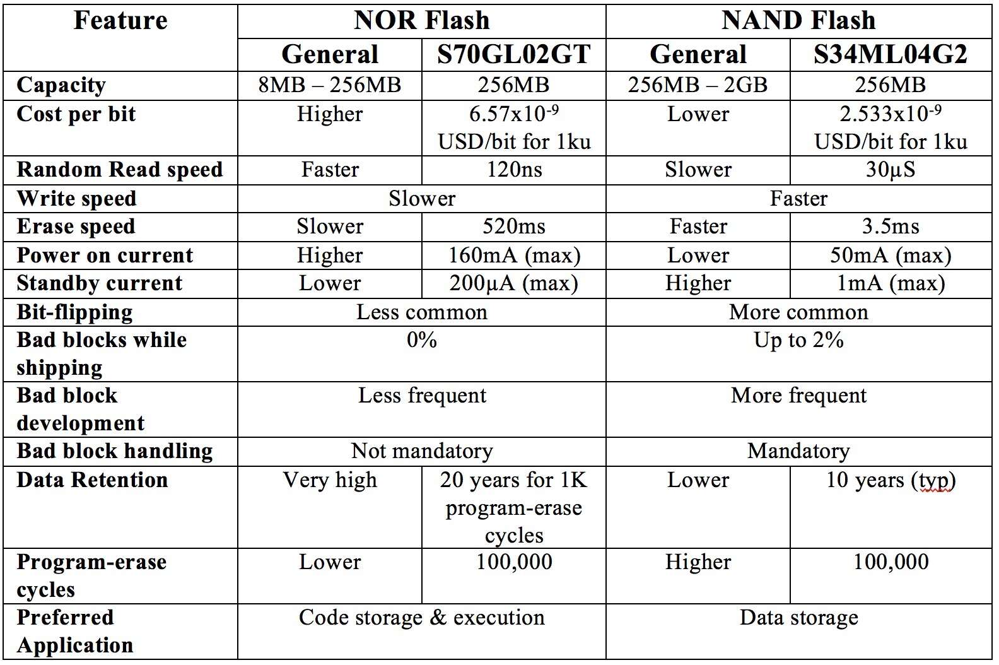

Flash
Table of Contents

1 Memory Architecture
Flash memories store information in memory cells made from floating gate transistors. The names of the technologies explain the way the memory cells are organized. In NOR Flash, one end of each memory cell is connected to the source line and the other end directly to a bit line resembling a NOR Gate. In NAND Flash, several memory cells (typically eight cells) are connected in series similar to a NAND gate.
The NOR Flash architecture provides enough address lines to map the entire memory range. This gives the advantage of random access and short read times, which makes it ideal for code execution. Another advantage is 100% known good bits for the life of the part. Disadvantages include larger cell size resulting in a higher cost per bit and slower write and erase speeds. For more details on how NOR Flash can be used in embedded systems, see An Overview of Parallel NOR Flash Memory.
NAND Flash, in contrast, has a much smaller cell size and much higher write and erase speeds compared to NOR Flash. Disadvantages include the slower read speed and an I/O mapped type or indirect interface, which is more complicated and does not allow random access. It is important to note that code execution from NAND Flash is achieved by shadowing the contents to a RAM, which is different than code execution directly from NOR Flash. Another major disadvantage is the presence of bad blocks. NAND Flash typically have 98% good bits when shipped with additional bit failure over the life of the part, thus requiring the need for error correcting code (ECC) functionality within the device.
2 Erase, Read & Write
In both NOR and NAND Flash, the memory is organized into erase blocks. This architecture helps maintain lower cost while maintaining performance. For example, a smaller block size enables faster erase cycles. The downside of smaller blocks, however, is an increase in die area and memory cost. Because of its lower cost per bit, NAND Flash can more cost-effectively support smaller erase blocks compared to NOR Flash. The typical block size available today ranges from 8KB to 32KB for NAND Flash and 64KB to 256KB for NOR Flash.
Erase operations in NAND Flash are straightforward while in NOR Flash, each byte needs to be written with ‘0’ before it can be erased. This makes the erase operation for NOR Flash much slower than for NAND Flash. For example, the S34ML04G2 Cypress NAND Flash requires 3.5ms to erase a 128KB block while the S70GL02GT Cypress NOR Flash requires ~520ms to erase a similar 128KB sector. This is a difference of nearly 150 times.
As mentioned earlier, NOR Flash memory has enough address and data lines to map the entire memory region, similar to how SRAM operates. For example, a 2-Gbit (256MB) NOR Flash with a 16-bit data bus will have 27 address lines, enabling random read access to any memory location. In NAND Flash, memory is accessed using a multiplexed address and data bus. Typical NAND Flash memories use an 8-bit or 16-bit multiplexed address/data bus with additional signals such as Chip Enable, Write Enable, Read Enable, Address Latch Enable, Command Latch Enable, and Ready/Busy. The NAND Flash needs to provide a command (read, write or erase), followed by the address and the data. These additional operations makes the random read for NAND Flash much slower. For example, the S34ML04G2 NAND Flash requires 30µS compared to 120ns for S70GL02GT NOR Flash. Thus the NAND is 250 times slower.
To overcome or to reduce the limitations of slower read speeds, memory is often read as pages in NAND Flash, with each page being a smaller sub-division of erase blocks. The contents of one page is read sequentially with address and command cycles only at the beginning of each read cycle. The sequential access duration for NAND Flash is normally lower than the random access duration in NOR Flash devices. With the random access architecture of NOR Flash, address lines need to be toggled for each read cycle, thereby accumulating the random access for sequential read. As the size of block of data to read increases, the accumulated delay in NOR Flash becomes greater than NAND Flash. Thus, NAND Flash can be faster for sequential reads. However, due to the much higher initial read access duration for NAND Flash, the performance difference is evident only while transferring large data blocks, often for sizes above 1 KB.
In both Flash technologies, data can be written to a block only if the block is empty. The already slow erase operation of NOR Flash makes the write operation even slower. In NAND Flash, similar to read, data is often written or programmed in pages (typically 2KB). For example, a page write alone with S34ML04G2 NAND Flash takes 300µS.
To speed up write operations, modern NOR Flashes also employ buffer programming similar to page writes. The S70GL02GT NOR Flash, for example, supports buffer programming, which enables multibyte programming with similar write timeout for single word. For example, buffer programming for 512 bytes of data can achieve a throughput of 1.14MBps.
3 Power Consumption
NOR Flash memories typically require more current than NAND Flash during initial power on. However, standby current for NOR Flash is much lower than NAND Flash. Instantaneous active power is comparable for both Flash memories. The active power is thus decided by the time duration for which memory is active. NOR Flash holds an advantage when it comes to random reads while NAND Flash consumes comparatively much lower power for erase, write, and sequential read operations.
4 Reliability
The reliability of saved data is an important aspect for any memory device. Flash memories suffer from a phenomenon called bit-flipping, where some bits can get reversed. This phenomenon is more common in NAND Flash than in NOR Flash. NAND Flashes are shipped with bad blocks scattered randomly throughout, due to yield considerations. More memory cells go bad as erase and program cycles continue throughout the life cycle of NAND Flash. Bad block handling is therefore a mandatory capability for NAND Flash. NOR Flash, on the other hand, are shipped with zero bad blocks with very low bad block accumulation during the life span of the memory. Thus, when it comes to the reliability of stored data, NOR Flash has an advantage over NAND Flash.
Another aspect of reliability is data retention, where NOR Flash again holds an advantage. S70GL02GT NOR Flash offers 20 years of data retention for up to 1K Program/Erase Cycles. S34ML04G2 NAND Flash offers a typical data retention of 10 years.
The number of program and erase cycles used to be an important characteristic to consider. This is because NAND Flash memories used to offer 10 times better program and erase cycles compared to NOR Flash. With today’s technological advancements, this is no longer true as both memories are now comparable. For example, both the S70GL02GT NOR and S34ML04G2 NAND support 100,000 program-erase cycles. However, due to the smaller block size used in NAND Flash, a smaller area is erased for each operation. This results in a higher overall life span compared to NOR Flash.
In general, NOR Flash memory makes an excellent choice for applications requiring lower capacity, fast random read access, and higher data reliability, such as is required for code execution. NAND Flash, for its part, is ideal for applications such as data storage where higher memory capacity and faster write and erase operations are required.

5 Addition
5.1 nor flash
- 基本存储单元的并联结构决定了金属导线占用很大的面积，因此NOR FLASH的存储密度较低，无法适用于需要大容量存储的应用场合，即适用于code-storage，不适用于data-storage.
- 基本存储单元的并联结构决定了NOR FLASH具有存储单元可独立寻址且读取效率高的特性，因此适用于code-storage，且程序可以直接在NOR 中运行.
- NOR FLASH写入采用了热电子注入方式，效率较低，因此NOR写入速率较低，不适用于频繁擦除/写入场合.
5.2 nand flash
- 基本存储单元的串联结构减少了金属导线占用的面积，Die的利用率很高，因此NAND FLASH存储密度高，适用于需要大容量存储的应用场合，即适用于data-storage.
- 基本存储单元的串联结构决定了NAND FLASH无法进行位读取，也就无法实现存储单元的独立寻址，因此程序不可以直接在NAND 中运行,因此NAND是以Page为读取单位和写入单位，以Block为擦除单位.
- NAND FLASH写入采用F-N隧道效应方式，效率较高，因此NAND擦除/写入速率很高，适用于频繁擦除/写入场合。同时NAND是以Page为单位进行读取的，因此读取速率也不算低（稍低于NOR.